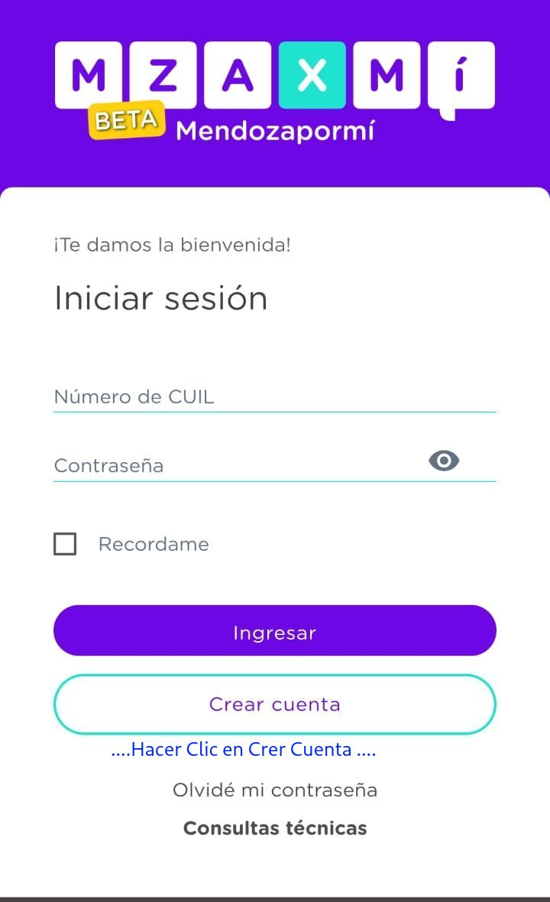
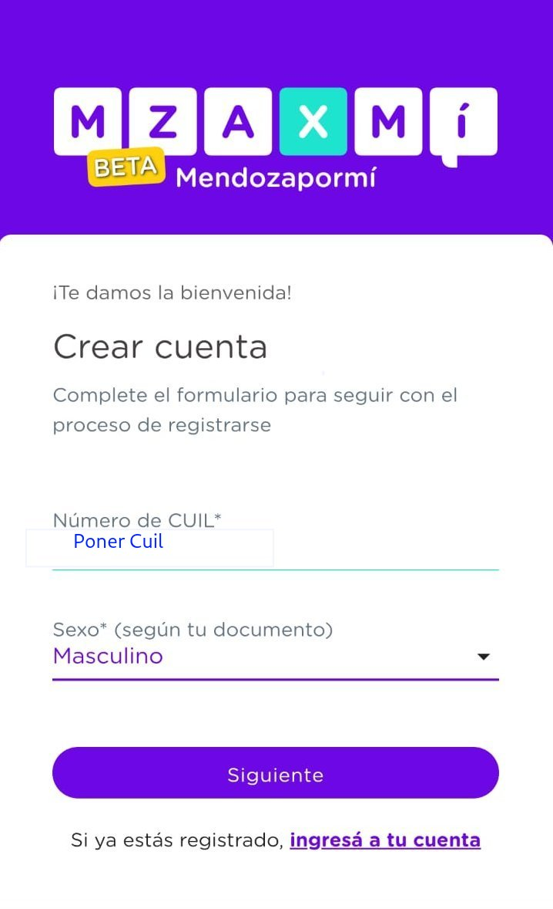
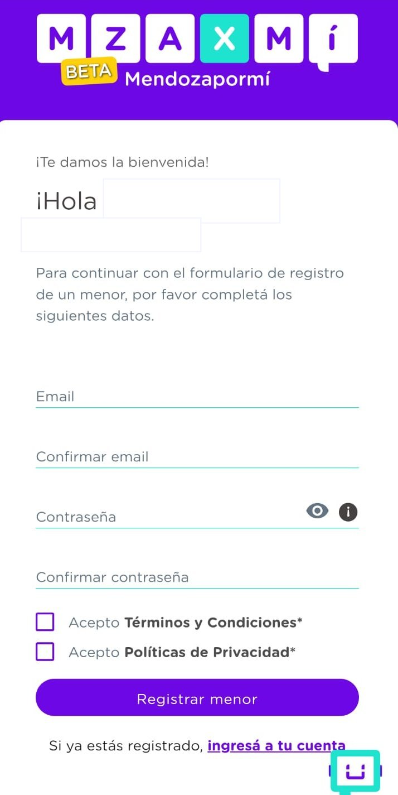
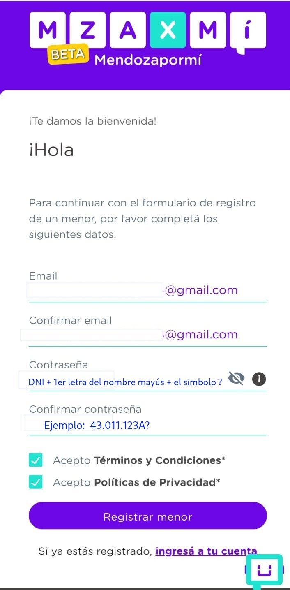
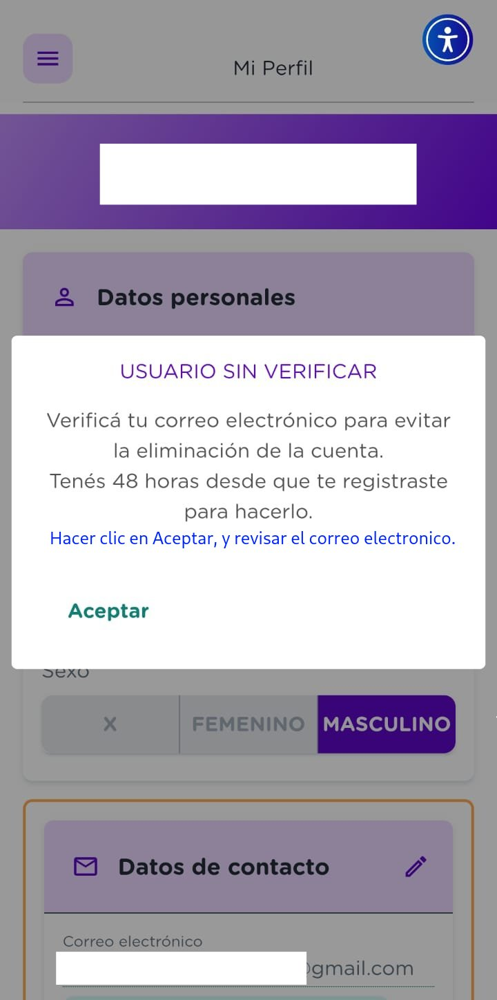
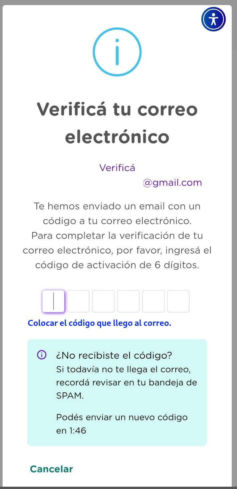
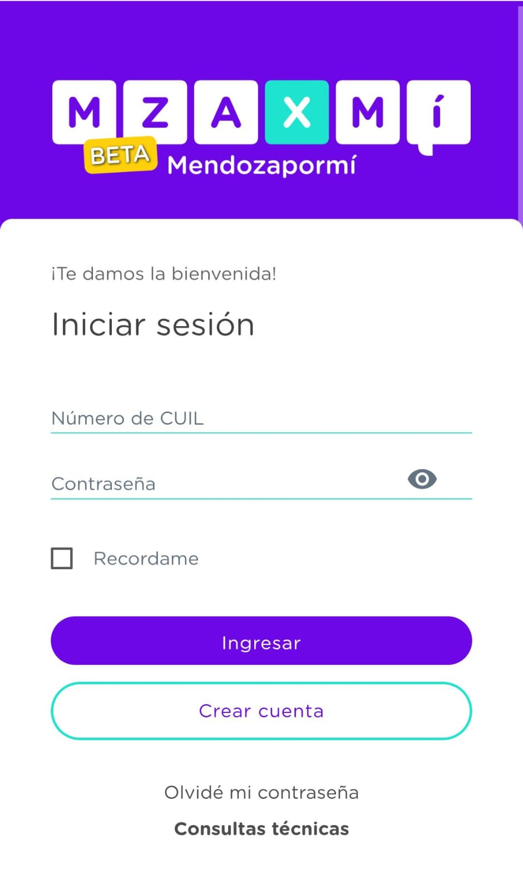

Paso 1: Pantalla de inicio
Abre la aplicación y haz clic en **"Crear cuenta"**.
Paso 2: Ingresa tus datos
Completa tu **CUIL** y selecciona tu **sexo**.
Paso 3: Correo y contraseña
Introduce tu correo electrónico y crea una contraseña siguiendo el formato del siguiente paso.
Paso 4: Formato de contraseña
La contraseña debe ser tu **DNI + la primera letra de tu nombre en mayúscula + ?**. Por ejemplo: 43.011.123A?
Paso 5: Verificación de cuenta
La app te pedirá verificar tu correo para activar tu cuenta. Pulsa en **"Aceptar"**.
Paso 6: Revisa tu correo
Busca un correo de **Mendoza por mí** con un **código de 6 dígitos**. ¡No olvides revisar la carpeta de spam!
Paso 7: Ingresa el código
Vuelve a la app, ingresa el código y tu cuenta estará verificada.
Paso 8: ¡Inicia sesión!
Tu cuenta ya está lista. Vuelve al inicio para ingresar con tu **CUIL** y la **contraseña** que creaste.
